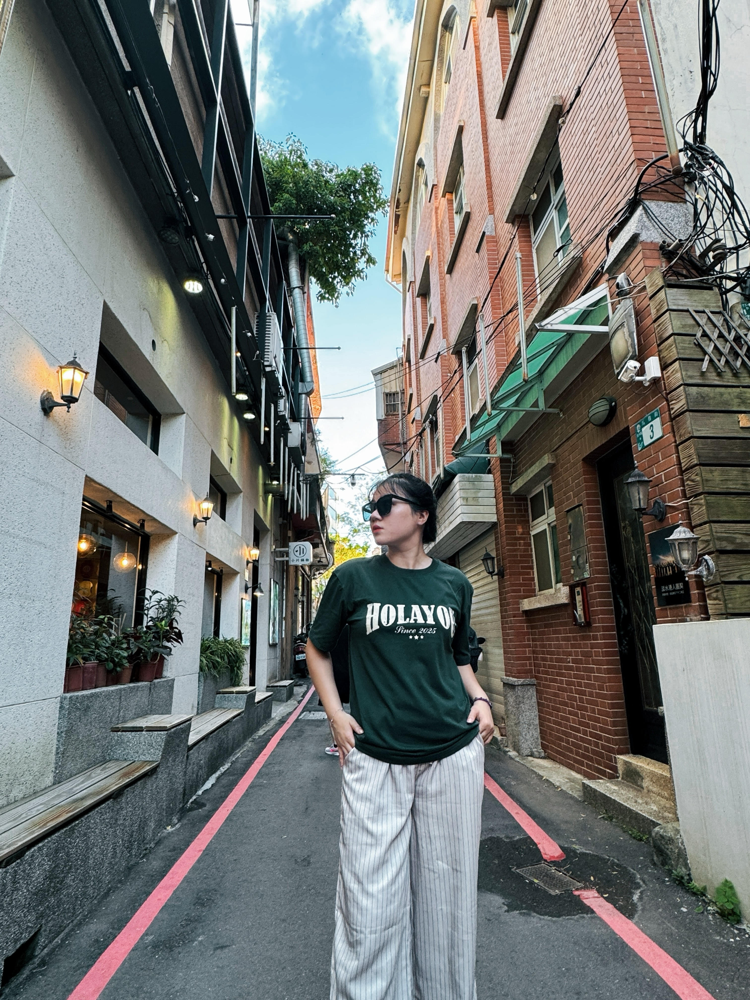
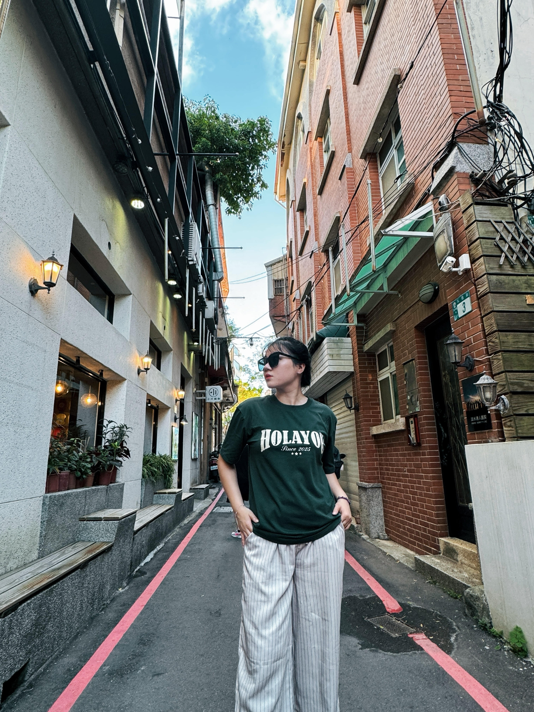

關於我
你好，我是武陶青竹，目前居住在台灣。 我喜歡探索不同文化、嘗試新事物，也享受靜靜看電影或聽音樂的時光。 希望能透過工作、旅行與學習不斷成長。
興趣與嗜好
- 🎵 聽音樂
- 🎬 看電影
- 💤 睡覺放鬆
- 🏞️ 想體驗：旅遊阿里山
工作經驗－優點
- ✔️ 學習能力強，能快速適應新環境與工作內容。
- ✔️ 工作態度認真負責，重視工作品質與效率。
- ✔️ 配合度高，能與主管及同事良好合作。
- ✔️ 抗壓性佳，面對忙碌或高壓狀況仍能完成任務。
- ✔️ 做事細心、有耐心，適合需要專注與穩定度的工作。
工作經驗－缺點與改善
- ⚠️ 有時對自己要求過高，容易花較多時間確認細節，目前正在學習更有效率地安排時間。
- ⚠️ 剛接觸新工作時較為保守，但熟悉後會主動提出建議。
- ⚠️ 表達意見較內斂，正持續練習更主動與團隊溝通。
我的照片
以下是我生活中的一些照片：
 

聯絡我
Email：example@email.com